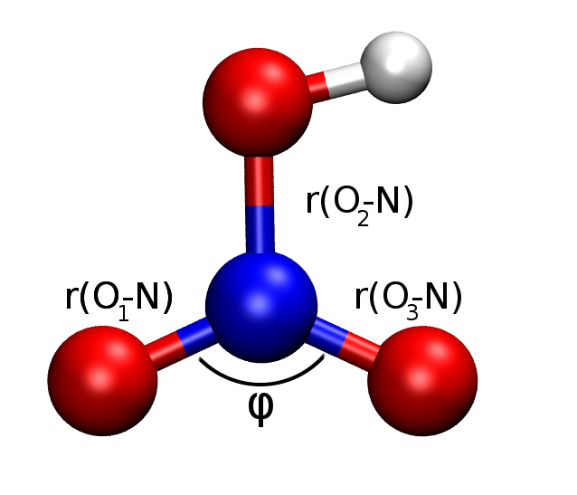

Influence of correlation on geometry: HNO_3 molecule
8.4. Influence of correlation on geometry: HNO\(_3\) molecule#
The influence of electron correlation on structural parameters such as bond lengths and angles is not negligible. Hartree-Fock calculations may give bond lengths that deviate considerably from the experimental value. Comparably cheap methods such as MPn may often remedy sufficiently for this problem, but some smaller deviations may remain. The most rigorous approach in such cases would be e.g. a full configuration interaction (full CI/FCI), but this is computationally untractable for any larger molecule using a reasonable basis. One may therefore restrict the method to singly and doubly excited Slater determinants, assuming that the main effects of correlation are captured well enough in such a truncation. However, such truncations introduce size-consistency problems.
In this exercise, we will assess and comment on the performance of HF, MP2 and MP3 with respect to the prediction of bond lengths and bond angles in HNO\(_3\) in reference to the experimental values (Phys. Chem. Chem. Phys., 2014 16, 19437).

Exercise 8
Assess and comment on the performance of the different methods with respect to experimental values. Can you think of possible reasons for differences between the experimental and computed values?
import psi4
import py3Dmol
import pandas as pd
import numpy as np
import sys
sys.path.append("..")
from helpers import *
psi4.core.clean_options()
hno3 = psi4.geometry("""
0 1
symmetry c1
O 1.326 -0.373 -0.127
N 0.015 -0.015 0.415
O -0.329 1.292 -0.145
O -0.944 -0.973 -0.135
H -1.811 -0.738 0.223""")
drawXYZ(hno3)
You appear to be running in JupyterLab (or JavaScript failed to load for some other reason). You need to install the 3dmol extension:
jupyter labextension install jupyterlab_3dmol
psi4.set_options({'reference':'uhf','guess':'gwh'})
hno3_hf = hno3.clone()
psi4.core.set_output_file(f'hno3_hf.log', False)
E_hf, history_hf = psi4.optimize('scf/6-31+G*', molecule=hno3_hf, return_history=True)
Optimizer: Optimization complete!
hno3_mp2 = hno3_hf.clone()
psi4.core.set_output_file(f'hno3_mp2.log', False)
E_mp2, history_mp2 = None, None # run MP2 calculation here, need to use return_history=True to return the history as output (used later)
hno3_mp3 = hno3_mp2.clone()
psi4.core.set_output_file(f'hno3_mp3.log', False)
E_mp2, history_mp2 = None, None # run MP3 calculation here, need to use return_history=True to return the history as output (used later)
#save last optimized coordinates in a dictionary
opt_coord = {
'hf':np.array(history_hf['coordinates'][-1]),
'mp2':np.array(history_mp2['coordinates'][-1]),
'mp3':np.array(history_mp3['coordinates'][-1])
}
You can calculate the distance between two points is the L2 norm (Euclidean distance) as
a = np.array([0,0,0])
b = np.array([1,1,1])
np.linalg.norm(a-b)
this has been implemented in the calculate_bond function contained in helpers.py imported above.
The calculation for the angle is also possible using numpy. You can use the following function:
def calculate_angle(a,b,c):
ba = a - b
bc = c - b
cosine_angle = np.dot(ba, bc) / (np.linalg.norm(ba) * np.linalg.norm(bc))
angle = np.arccos(cosine_angle)
return np.degrees(angle)
drawXYZ_labeled(hno3)
You appear to be running in JupyterLab (or JavaScript failed to load for some other reason). You need to install the 3dmol extension:
jupyter labextension install jupyterlab_3dmol
# we use the opt_coord dictionary to calculate the properties using python
# the central N has index 1, the oxygens have index 0,2,3
# the units are in bohr, we convert to Å
results = {'hf':{},'mp2':{},'mp3':{},'exp':{'r(O0-N) Å':1.198, 'r(O2-N) Å':1.410, 'r(O3-N) Å':1.213, 'φ(O-N-O) °':130.2}, }
for method in ['hf', 'mp2', 'mp3']:
xyz = opt_coord[method] # store the geometry array optimized with the current method in a temp variable
results[method]['r(O0-N) Å'] = calculate_bond(xyz[0], xyz[1]) * psi4.constants.bohr2angstroms
results[method]['r(O2-N) Å'] = calculate_bond(xyz[2], xyz[1]) * psi4.constants.bohr2angstroms
results[method]['r(O3-N) Å'] = calculate_bond(xyz[3], xyz[1]) * psi4.constants.bohr2angstroms
results[method]['φ(O-N-O) °'] = calculate_angle(xyz[0], xyz[1], xyz[2])
pd.DataFrame.from_dict(results)